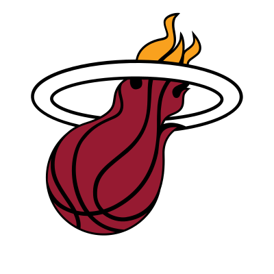

Norman Powell was one of the 20 leading scorers in one season on this site.
His map for each is below, drawn from the same tables and checks as the season pages: size is how often he shot from
a hexagon, color is his field-goal percentage there minus the league's from the same hexagon that season. Hover or
tap a hexagon for its numbers. Each season is measured against that season's league, and NBA.com's shot-type labels
changed over the years, so compare his shot types within a season, not across seasons.
Compare him with another player .
Season Rank PPG G Half-court att.
Points per shot eFG% TS% PER USG% WS WS/48 BPM VORP 2025-26 20 21.7 58 894 1.11 .558 .609 17.5 27.2 4.0 .112 1.6 1.5 card
Percentage points above or below league average: -15% -10% -5% +0% +5% +10% +15%
Size is about attempts and color is about efficiency.
Shot Types Bar - bar measures the players FG% against the league average (black line), attempts and the corresponding share of attempts shown to the right
2025-26

SG 20th in points per game, 21.7, in 58 games · 894 half-court attempts · 1.11 points per shot
39 attempts here. On 39: 33.3% against the league's 38.7% 1 attempts here. On 20: 45.0% against the league's 36.5% 14 attempts here. On 66: 43.9% against the league's 36.6% 39 attempts here. On 99: 42.4% against the league's 35.6% 26 attempts here. On 118: 37.3% against the league's 35.3% 9 attempts here. On 84: 38.1% against the league's 34.6% 1 attempts here. On 28: 42.9% against the league's 32.9% 5 attempts here. On 33: 48.5% against the league's 37.1% 7 attempts here. On 82: 40.2% against the league's 36.6% 13 attempts here. On 122: 37.7% against the league's 36.1% 31 attempts here. On 103: 38.8% against the league's 35.1% 17 attempts here. On 79: 35.4% against the league's 35.1% 1 attempts here. On 39: 33.3% against the league's 34.3% 4 attempts here. On 13: 46.2% against the league's 41.8% 5 attempts here. On 28: 42.9% against the league's 40.3% 1 attempts here. On 33: 42.4% against the league's 39.2% 3 attempts here. On 37: 43.2% against the league's 39.2% 3 attempts here. On 63: 34.9% against the league's 37.8% 4 attempts here. On 75: 32.0% against the league's 36.1% 16 attempts here. On 72: 37.5% against the league's 35.3% 4 attempts here. On 51: 35.3% against the league's 35.3% 4 attempts here. On 29: 48.3% against the league's 42.3% 9 attempts here. On 42: 35.7% against the league's 41.5% 3 attempts here. On 49: 42.9% against the league's 42.3% 7 attempts here. On 36: 52.8% against the league's 43.7% 2 attempts here. On 26: 50.0% against the league's 43.3% 2 attempts here. On 56: 33.9% against the league's 37.5% 28 attempts here. On 73: 35.6% against the league's 35.3% 2 attempts here. On 54: 38.9% against the league's 34.9% 7 attempts here. On 56: 48.2% against the league's 45.5% 13 attempts here. On 128: 49.2% against the league's 46.7% 13 attempts here. On 126: 52.4% against the league's 46.4% 5 attempts here. On 68: 60.3% against the league's 45.6% 3 attempts here. On 28: 46.4% against the league's 45.0% 1 attempts here. On 60: 36.7% against the league's 37.0% 20 attempts here. On 76: 38.2% against the league's 34.7% 23 attempts here. On 262: 58.0% against the league's 64.3% 60 attempts here. On 354: 57.1% against the league's 59.9% 25 attempts here. On 187: 55.1% against the league's 47.5% 13 attempts here. On 60: 61.7% against the league's 45.6% 2 attempts here. On 26: 50.0% against the league's 42.9% 4 attempts here. On 76: 38.2% against the league's 35.0% 21 attempts here. On 79: 36.7% against the league's 34.2% 159 attempts here. On 315: 57.8% against the league's 61.5% 61 attempts here. On 334: 58.4% against the league's 59.7% 10 attempts here. On 120: 55.8% against the league's 46.7% 2 attempts here. On 31: 61.3% against the league's 44.0% 1 attempts here. On 42: 42.9% against the league's 37.4% 27 attempts here. On 86: 39.5% against the league's 34.4% 7 attempts here. On 76: 36.8% against the league's 34.0% 12 attempts here. On 241: 59.3% against the league's 63.7% 7 attempts here. On 97: 53.6% against the league's 47.1% 2 attempts here. On 26: 57.7% against the league's 43.5% 1 attempts here. On 12: 50.0% against the league's 41.2% 5 attempts here. On 73: 39.7% against the league's 35.7% 21 attempts here. On 78: 38.5% against the league's 34.9% 2 attempts here. On 27: 51.9% against the league's 45.6% 3 attempts here. On 18: 44.4% against the league's 42.8% 1 attempts here. On 9: 33.3% against the league's 43.1% (below the floor, not colored) 18 attempts here. On 58: 39.7% against the league's 35.3% 3 attempts here. On 8: 37.5% against the league's 42.5% (below the floor, not colored) 2 attempts here. On 18: 33.3% against the league's 37.3% 14 attempts here. On 35: 34.3% against the league's 36.1% 1 attempts here. On 17: 35.3% against the league's 35.5% 25 attempts here. On 25: 32.0% against the league's 38.6%
More stats Shot Types (Share of Attempts) Jump Shot: 21.7% (194 of 895 attempts) Pullup Jump Shot: 17.2% (154 of 895 attempts) Driving Layup Shot: 14.7% (132 of 895 attempts) Driving Floating Jump Shot: 8.9% (80 of 895 attempts) Other: 37.4% (335 of 895 attempts) 21.7% 17.2% 14.7% 8.9% 37.4% Shot Types (Efficiency) Attempts (Share of Attempts) Jump Shot: 194 attempts (22% of his shots), 37.6% made against the league's 37.0% Jump Shot 194 (22%) 38% Pullup Jump shot: 154 attempts (17% of his shots), 40.3% made against the league's 38.1% Pullup Jump Shot 154 (17%) 40% Driving Layup Shot: 132 attempts (15% of his shots), 53.8% made against the league's 49.6% Driving Layup Shot 132 (15%) 54% Driving Floating Jump Shot: 80 attempts (9% of his shots), 47.5% made against the league's 42.8% Driving Floating Jump Shot 80 (9%) 48% Running Jump Shot: 55 attempts (6% of his shots), 49.1% made against the league's 38.9% Running Jump Shot 55 (6%) 49% Running Pull-Up Jump Shot: 45 attempts (5% of his shots), 31.1% made against the league's 39.9% Running Pull-Up Jump Shot 45 (5%) 31% Driving Finger Roll Layup Shot: 43 attempts (5% of his shots), 60.5% made against the league's 62.6% Driving Finger Roll Layup Shot 43 (5%) 60% Driving Reverse Layup Shot: 32 attempts (4% of his shots), 78.1% made against the league's 57.2% Driving Reverse Layup Shot 32 (4%) 78% Other Scorers in '25-'26